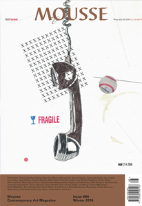

Mousse Magazine
Mousee Magazine write-ups about Kale Gallery's Subtext and Stephen Aggra's Fourth Rail.
Mousee Magazine write-ups about Kale Gallery's Subtext and Stephen Aggra's Fourth Rail.
Select Cuts & Filets is reviewed in The Concordian.
Hi-Fructose Magazine discusses Yumiko Kayukawa's latest body of work, Year of the Fire Horse.
Saint Joseph Patron Parish in collaboration with the International Studio & Curatorial Program present Kickboxing, a public performance in Atlanta by artist Alex Mastrovick.
Kale is pleased to announce, the work of Stephen Aggra and Lauren Hadley will be exhibited this May at PGP Photo Fair at Carnegie Hall of Art in Pittsburg, PA. May 17th - 18th, 2015.
L'Oeil de la Ole's Elaine Avedon interviews Lauren Hadley on The Park, a study of Atlanta's Piedmont Park. This will be Hadley's first solo exhibition in Atlanta.
The Park will be on view from April 30th - June 8th, 2015.
Kale Gallery is thrilled to be a part of Artshow Busan 2014. The show features galleries from around the globe, exhibiting work in a variety of mediums.
The show will run from Friday, April 18 - Monday, April 21, 2014 at BEXCO in Busan, South Korea.
Alex Mastrovick's At the End of the Time, presents a new body of work from the artist.
On view at Bamgamo's Galleria d'Art Moderna e Contemporanea through May 25th, 2014.
Kale Gallery is pleased to congratulate Stephen Aggra, whose work has recently been acquired by New York’s Museum of Modern Art.
In anticipation of her exquisite memoir Her, debuting March 5th, 2013, Cosmopolitan Magazine interviews writer and photographer Christa Parravanni on the nature of love, loss, and redemption. A blazingly passionate memoir of identity and love: when a charismatic and troubled young woman dies tragically, her identical twin must struggle to survive.
One of the most anticipated literary works of 2013. Congratulations Christa.